Boundary Logic with Real Clinical Data: The Pima Diabetes Dataset
Boundary_Logic_Pima_diabetes_workflow.RmdOverview
This vignette walks through the complete three-phase Boundary Logic workflow using the Pima Indians Diabetes dataset — a real-world clinical dataset with 768 observations, 8 numeric predictors, and a binary outcome (diabetic / non-diabetic).
The Pima dataset demonstrates features that do not arise in the simple iris example:
-
Non-linear decision surface — handled here with a
Generalised Additive Model (GAM) using spline terms, wrapped via
bl_wrap_model(). - Clinically motivated actionability constraints — some variables (Glucose) can be influenced by treatment, while others (Age, Pregnancies) cannot.
- External patient analysis — predicting and explaining the outcome for a new patient not in the training set.
The workflow follows three phases:
- Phase 1: Data preparation, model fitting, CVA biplot construction.
- Phase 2: Global interpretation — distance to boundary, per-variable importance, surrogate model.
- Phase 3: Local interpretation of a single patient — local counterfactual, Shapley attribution, sparse counterfactual.
Setup
library(boundarylogic)
library(dplyr)
#>
#> Attaching package: 'dplyr'
#> The following objects are masked from 'package:stats':
#>
#> filter, lag
#> The following objects are masked from 'package:base':
#>
#> intersect, setdiff, setequal, unionPhase 1: Build the pipeline
Step 1 — Prepare data
The dataset has 8 numeric features and a binary Outcome
column (1 = diabetic, 0 = non-diabetic). Before fitting the model, one
data quality step is applied:
-
Filter implausible zero values —
InsulinandSkinThicknesscannot physiologically be zero; those rows are removed.
bl_prepare_data() converts the Outcome
column to class (it is already 0/1 so
target_class = NULL) and creates a reproducible 80/20
train/test split.
pima_csv <- system.file("extdata", "pima_diabetes.csv",
package = "boundarylogic")
pima_raw <- read.csv(pima_csv)
pima_raw <- pima_raw %>%
filter(Insulin > 0, SkinThickness > 0)
bl_dat <- bl_prepare_data(
data = pima_raw,
class_col = "Outcome",
target_class = NULL, # already 0/1
train_fraction = 0.8,
seed = 121L
)
print(bl_dat)
#> <bl_data>
#> Features : 8 (Pregnancies, Glucose, BloodPressure, SkinThickness, Insulin, BMI, DiabetesPedigreeFunction, Age)
#> Target : pre-coded 0/1
#> Train rows : 315 | Test rows : 79What to check:
-
Features— the eight clinical measurement columns. -
Train rows / Test rows— approximately 80/20 of the filtered dataset. -
Class balance— check that both classes are represented in the training set.
table(bl_dat$train_data$class)
#>
#> 0 1
#> 209 106Step 2 — Filter outliers (optional)
bl_filter_outliers() removes training observations that
fall outside the convex hull enclosing the specified fraction of the
data. With hull_fraction = 0.9, the outermost 10 % of
training points are removed before model fitting.
bl_filt <- bl_filter_outliers(bl_dat, hull_fraction = 0.9)
#> Hull fraction: 0.90 | Retained: 295 (93.7%) | Removed: 20 (6.3%)
print(bl_filt)
#> <bl_filter_result>
#> Hull fraction : 0.90
#> Retained : 295 (93.7%)
#> Removed : 20 (6.3%)Step 3 — Fit a GAM and wrap it
The Pima outcome is non-linear with respect to most predictors. A Generalised Additive Model (GAM) with spline terms is a good choice here: it is flexible enough to capture the non-linear decision surface while remaining interpretable.
mgcv::gam() is fitted directly (giving full control over
the formula and spline settings). The fitted object is then registered
as a bl_model via bl_wrap_model() with a
custom predict_fn.
gam_formula <- class ~ s(Glucose) + s(BloodPressure) +
s(Pregnancies) + s(SkinThickness) + Insulin +
s(BMI) + DiabetesPedigreeFunction + Age
custom_gam <- mgcv::gam(
formula = gam_formula,
data = bl_filt$train_data,
family = binomial(link = "logit")
)
bl_mod <- bl_wrap_model(
model = custom_gam,
model_type = "custom",
var_names = bl_filt$var_names,
predict_fn = function(m, new_data) {
as.numeric(mgcv::predict.gam(m, newdata = new_data, type = "response"))
},
train_data = bl_filt$train_data
)
print(bl_mod)
#> <bl_model>
#> Model type : custom
#> Cutoff : 0.5
#> Train Accuracy: 0.7898 | Train Gini: 0.7566
#>
#> --- Model summary ---
#> Length Class Mode
#> model 59 gam list
#> predict_fn 1 -none- function
#> ---------------------Why model_type = "custom"?mgcv::gam() is not one of the built-in parsnip-backed
types. Supplying predict_fn tells the package exactly how
to call predict() on the model object. The function
signature must be function(model, new_data) returning a
numeric probability vector.
Steps 4–6 — Build and assemble
bl_build_result() combines the projection (Step 4),
prediction grid (Step 5), and assembly (Step 6) into a single call.
CVA projection is used here. CVA (Canonical Variate Analysis) maximises between-class separation relative to within-class spread, which makes the decision boundary clearly visible in the 2D biplot plane for datasets with a well-separated binary outcome.
rounding = 2L sets a wider contour band
(cutoff ± 0.01, i.e. contour levels at 0.49 / 0.51), which
works well for smooth, gradual decision surfaces like those produced by
a GAM:
rounding |
b_margin |
Contour levels |
|---|---|---|
2L |
0.01 |
0.49 / 0.51
|
3L |
0.001 |
0.499 / 0.501
|
bl_results <- bl_build_result(
bl_data = bl_filt,
bl_model = bl_mod,
method = "CVA",
title = "Pima diabetes — GAM, CVA biplot",
rounding = 2L
)
print(bl_results)
#> <bl_result>
#> Model type : custom
#> Method : CVA
#> Features : 8 (Pregnancies, Glucose, BloodPressure, SkinThickness, Insulin, BMI, DiabetesPedigreeFunction, Age)
#> Train rows : 295 | Test rows: 79
#> Cutoff : 0.5
#> Accuracy : 0.7898 | Gini: 0.7566
#> Grid size : 200 x 200
#> Hull fraction: 1.00
#> Created : 2026-03-25 06:21:45
summary(bl_results)
#> <bl_result>
#> Model type : custom
#> Method : CVA
#> Features : 8 (Pregnancies, Glucose, BloodPressure, SkinThickness, Insulin, BMI, DiabetesPedigreeFunction, Age)
#> Train rows : 295 | Test rows: 79
#> Cutoff : 0.5
#> Accuracy : 0.7898 | Gini: 0.7566
#> Grid size : 200 x 200
#> Hull fraction: 1.00
#> Created : 2026-03-25 06:21:45
#>
#> --- Model performance (training data) ---
#> Confusion matrix (train):
#> Actual
#> Predicted 0 1
#> 0 177 43
#> 1 19 56
#>
#> Grid probability range: [0.0050, 0.9860]
#> Contour lines found : 2
#> Polygon filter : applied (fraction = 1.00)
#> Note: CVA forced standardise = FALSE.Visualise: plot_biplotEZ()
The biplot shows the CVA prediction surface (blue = non-diabetic, red = diabetic probability regions), training observations coloured by confusion category, and the decision boundary contour:
plot_biplotEZ(bl_results)#>
#> --- Prediction summary ---
#> Points plotted : 295
#> Predicted 1 : 75 (25.4 %)
#> Predicted 0 : 220 (74.6 %)
#> Accuracy : 233 / 295 (79.0 %)
#> TP / TN / FP / FN : 56 / 177 / 19 / 43
#> --------------------------Overlay the test observations:
test_pts <- bl_project_points(bl_results$test_data, bl_results)
plot_biplotEZ(bl_results, points = test_pts)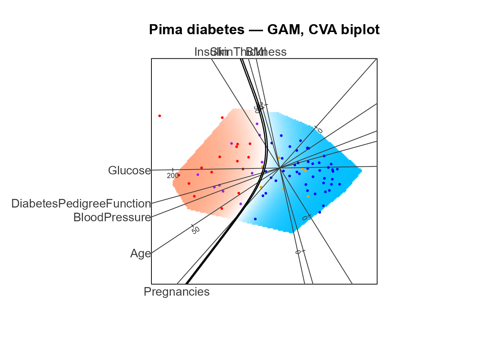
#>
#> --- Prediction summary ---
#> Points plotted : 79
#> Predicted 1 : 26 (32.9 %)
#> Predicted 0 : 53 (67.1 %)
#> Accuracy : 61 / 79 (77.2 %)
#> TP / TN / FP / FN : 16 / 45 / 10 / 8
#> --------------------------Phase 2: Global interpretation
Phase 2 uses the bl_results object to interpret the
model at the population level: finding the nearest boundary point for
every observation, measuring variable-level distances, and fitting a
surrogate model.
Step 7 — Find nearest boundary point:
bl_find_boundary()
bl_find_boundary() searches the decision boundary
contour for each observation and back-projects the nearest boundary
point to X-space. The result summarises how far each observation is from
the decision boundary and which variables drive that distance.
The search is constrained to train_ranges —
counterfactuals must lie within the range of the training feature
envelope.
bl_bnd <- bl_find_boundary(bl_results)
print(bl_bnd)
#> <bl_boundary>
#> Observations : 79
#> Boundaries used: 2
#> Dist Z (mean) : 0.1133
#> Dist X (mean) : 2.7521
#> B_pred range : [0.4900, 0.5100]Overlay the boundary arrows on the biplot (each arrow runs from an observation to its nearest boundary point):
plot_biplotEZ(bl_results, points = test_pts, boundary = bl_bnd)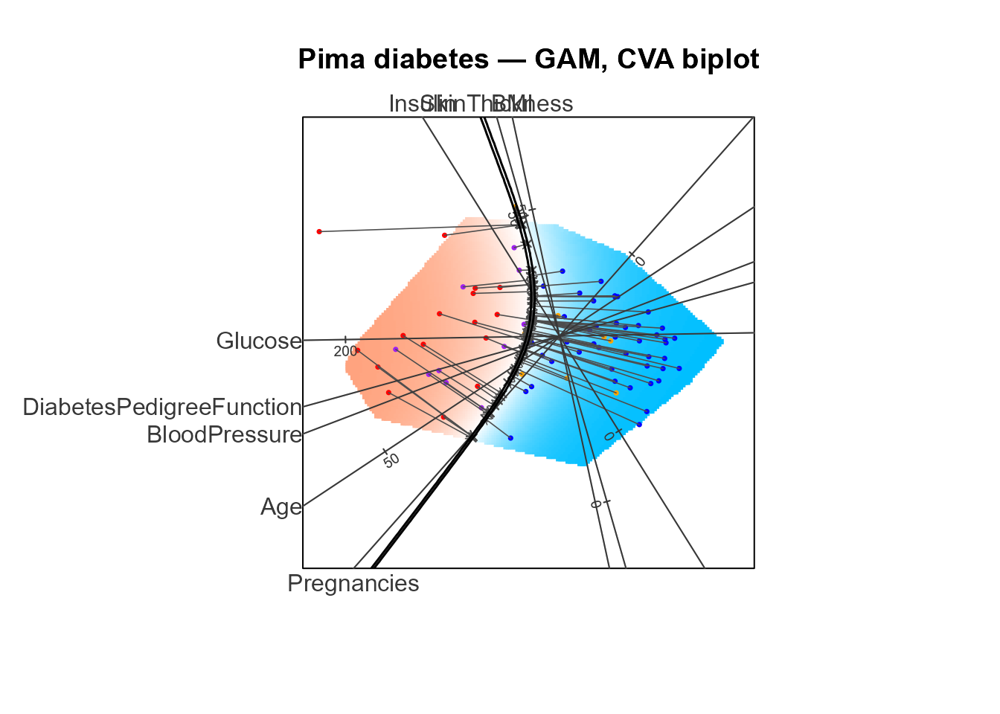
#>
#> --- Prediction summary ---
#> Points plotted : 79
#> Predicted 1 : 26 (32.9 %)
#> Predicted 0 : 53 (67.1 %)
#> Accuracy : 61 / 79 (77.2 %)
#> TP / TN / FP / FN : 16 / 45 / 10 / 8
#> --------------------------Step 8 — Distance-to-boundary plot
plot(bl_bnd) decomposes each observation’s distance to
the boundary into a signed, standardised contribution per variable.
Variables are sorted from least to most important (bottom to top).
-
Y-axis:
variable : total absolute standardised distance(importance proxy). - X-axis: signed standardised distance — positive means the observation is above the boundary in that variable’s direction.
- Colours: TP = red, TN = blue, FP = purple, FN = orange.
- The overall robustness scalar and per-variable totals are printed to the console.
plot(bl_bnd)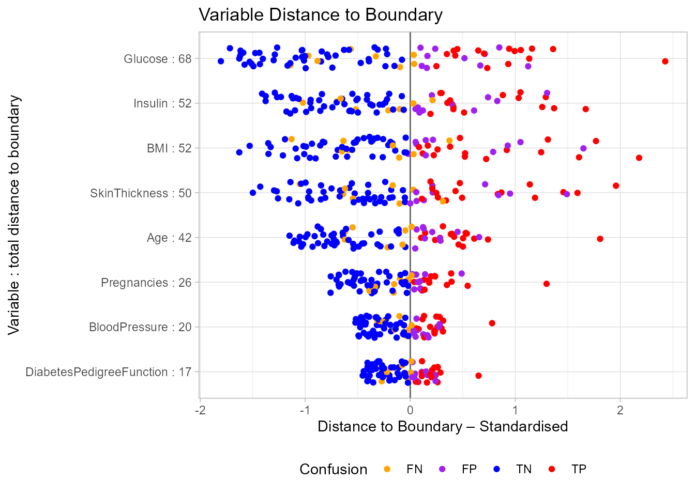
#>
#> Robustness (total distance): 326.34
#>
#> Per-variable totals (descending):
#> Glucose Insulin BMI
#> 68.22 52.48 51.55
#> SkinThickness Age Pregnancies
#> 49.64 41.87 25.78
#> BloodPressure DiabetesPedigreeFunction
#> 19.85 16.97
plot(bl_bnd, type = "boxplot")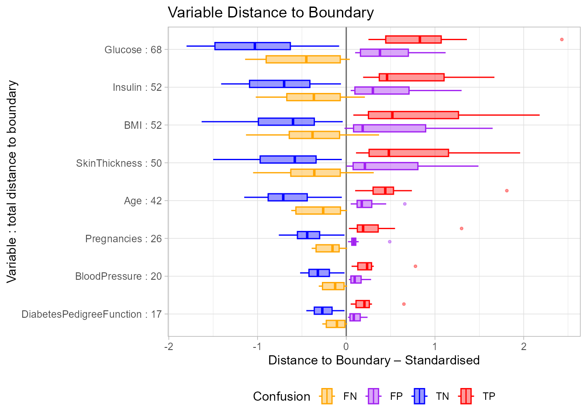
#>
#> Robustness (total distance): 326.34
#>
#> Per-variable totals (descending):
#> Glucose Insulin BMI
#> 68.22 52.48 51.55
#> SkinThickness Age Pregnancies
#> 49.64 41.87 25.78
#> BloodPressure DiabetesPedigreeFunction
#> 19.85 16.97Note:
plot(bl_bnd)already prints the overall robustness scalar and per-variable totals to the console. Callbl_robustness(bl_bnd)separately only when you need to access the values programmatically — for example, to compare robustness across models.
Step 9 — Surrogate model: bl_surrogate()
bl_surrogate() assigns each training observation a class
based solely on its position in Z-space relative to the hull-clipped
surrogate contour lines. This provides a purely spatial approximation of
the classifier confined to the training hull. Observations that project
outside the training hull receive surrogate_pred = NA.
Two accuracy measures are reported:
-
accuracy_vs_model— agreement with the fitted GAM’s predictions. -
accuracy_vs_labels— accuracy against true class labels.
bl_surr <- bl_surrogate(bl_results)
print(bl_surr)
#> <bl_surrogate>
#> Observations : 295
#> Surrogate regions : 2
#> Accuracy vs model : 0.9797
#> Accuracy vs labels : 0.7831
plot(bl_surr)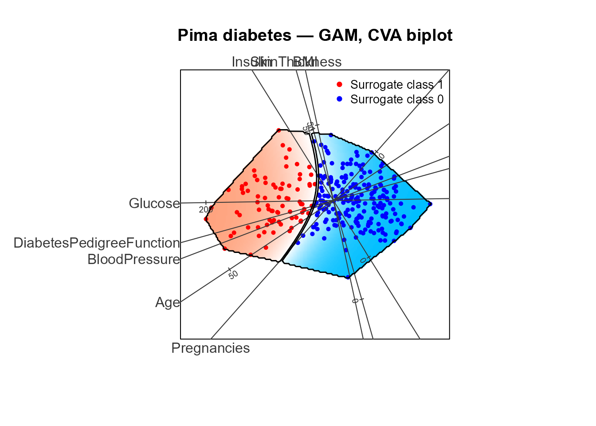
#> Surrogate accuracy vs model : 0.9797
#> Surrogate accuracy vs labels: 0.7831Phase 3: Local interpretation
Phase 3 explains a single patient observation by finding the nearest counterfactual via biplot rotation, decomposing the required changes using Shapley values, and producing a sparse counterfactual.
Step 10 — Inspect predictions and select a target
bl_predict() scores every test observation and returns a
tidy data frame. Inspect it to choose the patient you want to explain,
then wrap that row in a bl_target object using
bl_select_target().
pred_summary <- bl_predict(bl_results)
print(pred_summary)
#> row pred_prob pred_class true_class confusion Pregnancies Glucose
#> 1 1 0.758 1 1 TP 5 166
#> 2 2 0.417 0 1 FN 10 125
#> 3 3 0.169 0 0 TN 4 103
#> 4 4 0.815 1 1 TP 4 111
#> 5 5 0.963 1 1 TP 9 171
#> 6 6 0.010 0 0 TN 1 103
#> 7 7 0.397 0 0 TN 5 139
#> 8 8 0.597 1 0 FP 6 144
#> 9 9 0.011 0 0 TN 1 81
#> 10 10 0.697 1 1 TP 3 171
#> 11 11 0.800 1 1 TP 0 162
#> 12 12 0.572 1 1 TP 4 173
#> 13 13 0.094 0 0 TN 2 108
#> 14 14 0.656 1 0 FP 1 153
#> 15 15 0.019 0 0 TN 2 88
#> 16 16 0.976 1 1 TP 17 163
#> 17 17 0.189 0 1 FN 6 104
#> 18 18 0.294 0 1 FN 0 129
#> 19 19 0.031 0 1 FN 3 107
#> 20 20 0.351 0 0 TN 6 125
#> 21 21 0.842 1 0 FP 7 142
#> 22 22 0.028 0 0 TN 1 100
#> 23 23 0.022 0 0 TN 3 74
#> 24 24 0.965 1 1 TP 11 155
#> 25 25 0.033 0 0 TN 2 108
#> 26 26 0.291 0 0 TN 7 133
#> 27 27 0.622 1 0 FP 7 136
#> 28 28 0.256 0 0 TN 5 108
#> 29 29 0.175 0 0 TN 0 106
#> 30 30 0.010 0 0 TN 3 99
#> 31 31 0.214 0 0 TN 3 115
#> 32 32 0.368 0 1 FN 1 122
#> 33 33 0.020 0 0 TN 2 87
#> 34 34 0.014 0 0 TN 1 95
#> 35 35 0.513 1 0 FP 4 147
#> 36 36 0.156 0 0 TN 5 99
#> 37 37 0.444 0 0 TN 2 122
#> 38 38 0.014 0 0 TN 0 98
#> 39 39 0.044 0 0 TN 1 131
#> 40 40 0.328 0 0 TN 2 123
#> 41 41 0.696 1 1 TP 3 173
#> 42 42 0.026 0 0 TN 2 94
#> 43 43 0.886 1 1 TP 4 184
#> 44 44 0.114 0 1 FN 1 95
#> 45 45 0.037 0 0 TN 2 83
#> 46 46 0.988 1 1 TP 0 180
#> 47 47 0.099 0 0 TN 0 95
#> 48 48 0.119 0 0 TN 2 100
#> 49 49 0.050 0 0 TN 5 86
#> 50 50 0.946 1 1 TP 10 148
#> 51 51 0.313 0 0 TN 9 120
#> 52 52 0.179 0 0 TN 8 74
#> 53 53 0.030 0 0 TN 0 124
#> 54 54 0.131 0 0 TN 0 97
#> 55 55 0.793 1 0 FP 6 154
#> 56 56 0.691 1 1 TP 3 158
#> 57 57 0.030 0 0 TN 4 85
#> 58 58 0.212 0 0 TN 4 131
#> 59 59 0.863 1 0 FP 1 164
#> 60 60 0.066 0 0 TN 3 84
#> 61 61 0.052 0 0 TN 1 84
#> 62 62 0.231 0 0 TN 7 124
#> 63 63 0.139 0 0 TN 6 92
#> 64 64 0.495 0 1 FN 8 124
#> 65 65 0.023 0 0 TN 1 89
#> 66 66 0.018 0 0 TN 1 92
#> 67 67 0.064 0 0 TN 3 106
#> 68 68 0.130 0 0 TN 3 103
#> 69 69 0.586 1 0 FP 2 157
#> 70 70 0.801 1 1 TP 0 179
#> 71 71 0.019 0 0 TN 1 91
#> 72 72 0.179 0 1 FN 3 80
#> 73 73 0.893 1 1 TP 8 167
#> 74 74 0.154 0 0 TN 1 112
#> 75 75 0.901 1 0 FP 6 165
#> 76 76 0.732 1 1 TP 1 144
#> 77 77 0.061 0 0 TN 4 110
#> 78 78 0.406 0 0 TN 5 126
#> 79 79 0.957 1 0 FP 13 153
#> BloodPressure SkinThickness Insulin BMI DiabetesPedigreeFunction Age
#> 1 72 19 175 25.8 0.587 51
#> 2 70 26 115 31.1 0.205 41
#> 3 60 33 192 24.0 0.966 33
#> 4 72 47 207 37.1 1.390 56
#> 5 110 24 240 45.4 0.721 54
#> 6 80 11 82 19.4 0.491 22
#> 7 64 35 140 28.6 0.411 26
#> 8 72 27 228 33.9 0.255 40
#> 9 72 18 40 26.6 0.283 24
#> 10 72 33 135 33.3 0.199 24
#> 11 76 56 100 53.2 0.759 25
#> 12 70 14 168 29.7 0.361 33
#> 13 52 26 63 32.5 0.318 22
#> 14 82 42 485 40.6 0.687 23
#> 15 74 19 53 29.0 0.229 22
#> 16 72 41 114 40.9 0.817 47
#> 17 74 18 156 29.9 0.722 41
#> 18 110 46 130 67.1 0.319 26
#> 19 62 13 48 22.9 0.678 23
#> 20 68 30 120 30.0 0.464 32
#> 21 60 33 190 28.8 0.687 61
#> 22 66 15 56 23.6 0.666 26
#> 23 68 28 45 29.7 0.293 23
#> 24 76 28 150 33.3 1.353 51
#> 25 62 10 278 25.3 0.881 22
#> 26 88 15 155 32.4 0.262 37
#> 27 74 26 135 26.0 0.647 51
#> 28 72 43 75 36.1 0.263 33
#> 29 70 37 148 39.4 0.605 22
#> 30 80 11 64 19.3 0.284 30
#> 31 66 39 140 38.1 0.150 28
#> 32 64 32 156 35.1 0.692 30
#> 33 58 16 52 32.7 0.166 25
#> 34 60 18 58 23.9 0.260 22
#> 35 74 25 293 34.9 0.385 30
#> 36 54 28 83 34.0 0.499 30
#> 37 52 43 158 36.2 0.816 28
#> 38 82 15 84 25.2 0.299 22
#> 39 64 14 415 23.7 0.389 21
#> 40 48 32 165 42.1 0.520 26
#> 41 84 33 474 35.7 0.258 22
#> 42 68 18 76 26.0 0.561 21
#> 43 78 39 277 37.0 0.264 31
#> 44 82 25 180 35.0 0.233 43
#> 45 66 23 50 32.2 0.497 22
#> 46 78 63 14 59.4 2.420 25
#> 47 80 45 92 36.5 0.330 26
#> 48 54 28 105 37.8 0.498 24
#> 49 68 28 71 30.2 0.364 24
#> 50 84 48 237 37.6 1.001 51
#> 51 72 22 56 20.8 0.733 48
#> 52 70 40 49 35.3 0.705 39
#> 53 56 13 105 21.8 0.452 21
#> 54 64 36 100 36.8 0.600 25
#> 55 78 41 140 46.1 0.571 27
#> 56 70 30 328 35.5 0.344 35
#> 57 58 22 49 27.8 0.306 28
#> 58 68 21 166 33.1 0.160 28
#> 59 82 43 67 32.8 0.341 50
#> 60 68 30 106 31.9 0.591 25
#> 61 64 23 115 36.9 0.471 28
#> 62 70 33 215 25.5 0.161 37
#> 63 62 32 126 32.0 0.085 46
#> 64 76 24 600 28.7 0.687 52
#> 65 24 19 25 27.8 0.559 21
#> 66 62 25 41 19.5 0.482 25
#> 67 54 21 158 30.9 0.292 24
#> 68 72 30 152 27.6 0.730 27
#> 69 74 35 440 39.4 0.134 30
#> 70 50 36 159 37.8 0.455 22
#> 71 54 25 100 25.2 0.234 23
#> 72 82 31 70 34.2 1.292 27
#> 73 106 46 231 37.6 0.165 43
#> 74 80 45 132 34.8 0.217 24
#> 75 68 26 168 33.6 0.631 49
#> 76 82 46 180 46.1 0.335 46
#> 77 76 20 100 28.4 0.118 27
#> 78 78 27 22 29.6 0.439 40
#> 79 88 37 140 40.6 1.174 39
# Select the first predicted diabetic patient (class 1) for local explanation.
# With seed = 121L this is row 1 of test_data; the dynamic selection below
# ensures the vignette knits correctly regardless of the data split.
tdp <- which(pred_summary$pred_class == 1)[1]
tgt <- bl_select_target(bl_results, target = tdp)
print(tgt)
#> -- bl_target --
#> Row ID : 1
#> Predicted prob : 0.7580
#> Predicted class: 1
#> Feature values :
#> Pregnancies Glucose BloodPressure
#> 5.000 166.000 72.000
#> SkinThickness Insulin BMI
#> 19.000 175.000 25.800
#> DiabetesPedigreeFunction Age
#> 0.587 51.000
# Highlight the target on the main biplot
plot_biplotEZ(
bl_results,
points = test_pts,
target_point = unlist(tgt$x_obs),
target_label = tdp
)#>
#> --- Prediction summary ---
#> Points plotted : 79
#> Predicted 1 : 26 (32.9 %)
#> Predicted 0 : 53 (67.1 %)
#> Accuracy : 61 / 79 (77.2 %)
#> TP / TN / FP / FN : 16 / 45 / 10 / 8
#> --------------------------Step 12 — Set actionability constraints:
set_filters()
In a clinical context, not all variables can be changed for a given
patient. set_filters() encodes these constraints:
-
"decrease"— the counterfactual value must be ≤ observed (e.g., lowering Glucose via diet/medication is a realistic intervention). -
"fixed"— the variable is not actionable; the search allows ±0.5 of the observed value, and the sparse counterfactual always reverts to the original observed value. -
"increase"— the counterfactual value must be ≥ observed. -
c(min, max)— counterfactual must lie within this absolute range.
For this patient, Glucose is the primary clinical lever
(can be reduced), while Age and Pregnancies
are biological facts that cannot be changed:
flt <- set_filters(
tgt,
Glucose = "decrease", # reducing Glucose is the clinical lever
Age = "fixed", # Age is not actionable
Pregnancies = "fixed" # Pregnancies is not actionable
)
print(flt)
#> -- bl_filters --
#> Glucose : decrease
#> Age : fixed
#> Pregnancies : fixedStep 13 — Find local counterfactual:
bl_find_local_cf()
bl_find_local_cf() searches for the nearest decision
boundary point relative to the target patient by testing multiple
eigenvector pairs. For each pair it:
- Rotates the biplot so the target lies on the projection plane.
- Builds a local prediction grid in the rotated Z-space.
- Applies
train_ranges(feasibility) and the actionability filters from Step 12. - Finds the nearest opposing-class boundary point.
The pair with the overall minimum Z-space distance is selected.
Note: The Z-space convex hull polygon is not applied during the local search — rotation invalidates the original polygon coordinates. Only
train_rangesandset_filtersconstrain the search.
bl_local <- bl_find_local_cf(
bl_result = bl_results,
bl_target = tgt,
set_filters = flt
)
#> Pair 1/10: eigenvectors (1, 2) ...
#> Distance: 0.0504
#> Pair 2/10: eigenvectors (1, 3) ...
#> All segments eliminated by constraints.
#> Pair 3/10: eigenvectors (2, 3) ...
#> All segments eliminated by constraints.
#> Pair 4/10: eigenvectors (1, 4) ...
#> Distance: 0.1766
#> Pair 5/10: eigenvectors (2, 4) ...
#> All segments eliminated by constraints.
#> Pair 6/10: eigenvectors (3, 4) ...
#> All segments eliminated by constraints.
#> Pair 7/10: eigenvectors (1, 5) ...
#> All segments eliminated by constraints.
#> Pair 8/10: eigenvectors (2, 5) ...
#> All segments eliminated by constraints.
#> Pair 9/10: eigenvectors (3, 5) ...
#> All segments eliminated by constraints.
#> Pair 10/10: eigenvectors (4, 5) ...
#> No boundary contours found.
#> Best pair: (1, 2) | Distance: 0.0504
print(bl_local)
#> -- bl_local_result --
#> Solution found : TRUE
#> Best pair : (1, 2)
#> Distance (Z) : 0.0504
#> Boundary pred : 0.4900
#>
#> Target:
#> -- bl_target --
#> Row ID : 1
#> Predicted prob : 0.7580
#> Predicted class: 1
#> Feature values :
#> Pregnancies Glucose BloodPressure
#> 5.000 166.000 72.000
#> SkinThickness Insulin BMI
#> 19.000 175.000 25.800
#> DiabetesPedigreeFunction Age
#> 0.587 51.000
#>
#> All Z-distances by pair:
#> pair distance
#> (1,2) 0.05035124
#> (1,3) NA
#> (2,3) NA
#> (1,4) 0.17660016
#> (2,4) NA
#> (3,4) NA
#> (1,5) NA
#> (2,5) NA
#> (3,5) NA
#> (4,5) NAStep 14 — Local biplot
plot(bl_local) renders the biplot in the rotated
eigenvector plane that minimises the distance to the boundary. By
default, training observations are hidden — only the target (filled
circle) and counterfactual (grey cross with arrow) are shown.
plot(bl_local)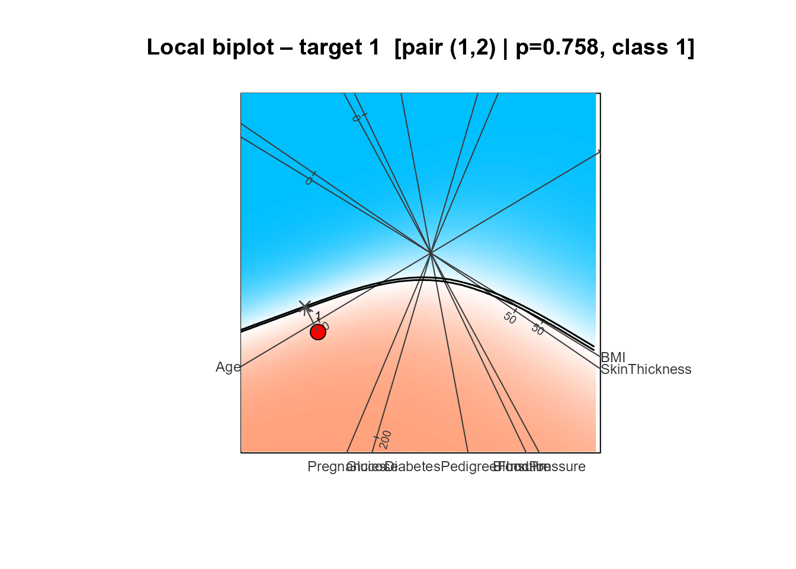
#>
#> --- Local CF summary ---
#> Target : 1
#> Pred prob : 0.7580 (class 1)
#> Best pair : (1, 2)
#> Distance (Z) : 0.0504
#> Boundary pred : 0.4900
#> ------------------------To also show training observations:
plot(bl_local, no_points = FALSE)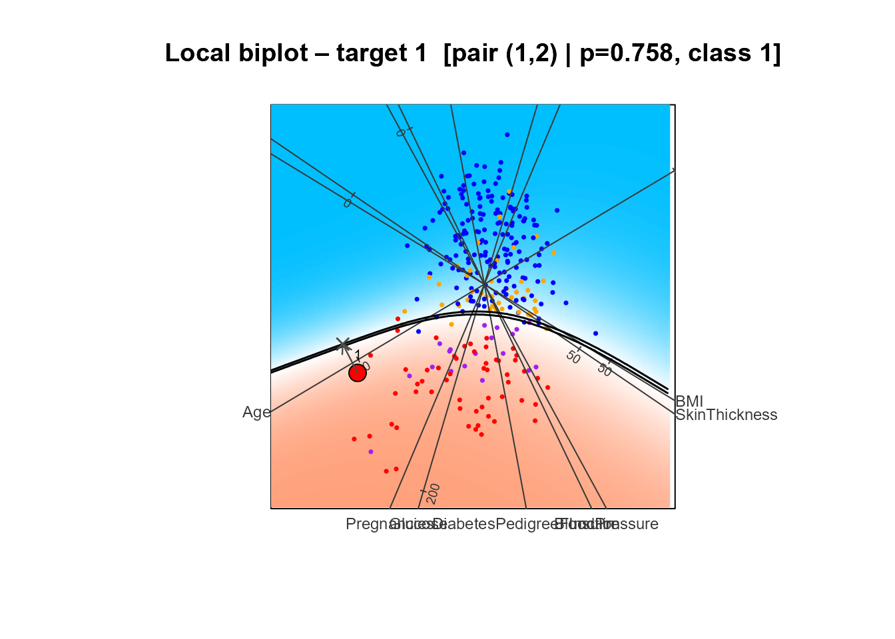
#>
#> --- Local CF summary ---
#> Target : 1
#> Pred prob : 0.7580 (class 1)
#> Best pair : (1, 2)
#> Distance (Z) : 0.0504
#> Boundary pred : 0.4900
#> ------------------------Step 15 — Shapley attribution: bl_shapley()
bl_shapley() decomposes the path from the target to the
counterfactual into per-variable contributions using the exact Shapley
formula. Each variable is classified as:
- Supports (dark blue) — moving in this direction helps cross the boundary (reduces the diabetic probability toward 0.5).
- Contradicts (grey) — moving in this direction works against crossing the boundary.
Y-axis labels show
variable: observed_value → required_change, both rounded to
3 decimal places.
bl_shapley_values <- bl_shapley(bl_local)
print(bl_shapley_values)
#> -- bl_shapley --
#> Row ID : 1
#> Pred prob : 0.7580
#> Pred class : 1
#> Boundary pred : 0.4900
#>
#> Shapley table:
#> varnames pred_data data_to_boundary shapley_cause Contribute
#> Insulin 175.000 -28.6485 0.0046 Contradicts
#> BloodPressure 72.000 -2.2535 -0.0014 Supports
#> Age 51.000 -0.2775 -0.0026 Supports
#> Pregnancies 5.000 -0.3008 -0.0051 Supports
#> DiabetesPedigreeFunction 0.587 -0.0361 -0.0112 Supports
#> BMI 25.800 -3.1988 -0.0766 Supports
#> Glucose 166.000 -8.4025 -0.0852 Supports
#> SkinThickness 19.000 -5.2048 -0.0905 Supports
plot(bl_shapley_values)Step 16 — Sparse counterfactual:
bl_find_sparse_cf()
bl_find_sparse_cf() creates a parsimonious
counterfactual by reverting all Contradicts variables
to their observed values, and reverting all variables marked
"fixed" in set_filters(). Only the
Supports variables take their counterfactual
values.
solution_valid = TRUE confirms the sparse counterfactual
still crosses the decision boundary (predicted probability changes from
class 1 to class 0).
bl_sparse <- bl_find_sparse_cf(bl_shapley_values, round_to = NULL)
# print() shows three predictions to verify the class flip:
# Observed — model score for the original patient
# Full CF — model score at the full counterfactual
# Sparse CF — model score for the sparse (zeroed) counterfactual
print(bl_sparse)
#> -- bl_sparse_result --
#> Solution valid : TRUE
#>
#> Predictions:
#> Observed : 0.7580 (class 1)
#> Full CF : 0.4900
#> Sparse CF : 0.4940
#>
#> Variable summary:
#> variable x_obs B_x x_sparse used_in_sparse
#> Insulin 175.000 146.3515 175.0000 FALSE
#> BloodPressure 72.000 69.7465 69.7465 TRUE
#> Age 51.000 50.7225 51.0000 TRUE
#> Pregnancies 5.000 4.6992 5.0000 TRUE
#> DiabetesPedigreeFunction 0.587 0.5509 0.5509 TRUE
#> BMI 25.800 22.6012 22.6012 TRUE
#> Glucose 166.000 157.5975 157.5975 TRUE
#> SkinThickness 19.000 13.7952 13.7952 TRUE
# Grey cross = full counterfactual (all variables changed)
# Green cross = sparse CF (valid — crosses boundary)
# Yellow cross = sparse CF (invalid — does not cross boundary)
plot(bl_sparse)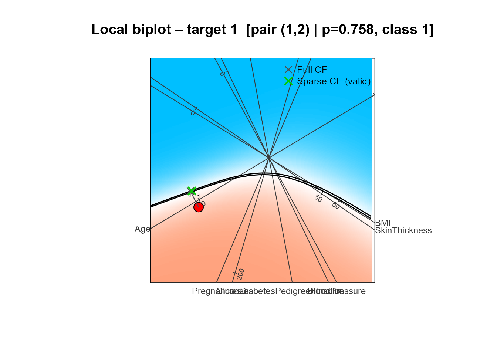
#>
#> --- Sparse CF summary ---
#> Target : 1
#> Observed pred : 0.7580 (class 1)
#> Full CF pred : 0.4900
#> Sparse CF pred : 0.4940
#> Solution valid : TRUE
#> -------------------------Step 17 (Alternative): Unconstrained local search
Running bl_find_local_cf() without actionability
constraints is useful as a baseline — it shows the geometrically nearest
boundary point regardless of clinical plausibility. If the constrained
search in Step 13 returned solution_found = FALSE, the
unconstrained search confirms whether a boundary point exists at
all.
bl_local_free <- bl_find_local_cf(bl_results, tgt)
#> Pair 1/10: eigenvectors (1, 2) ...
#> Distance: 0.0501
#> Pair 2/10: eigenvectors (1, 3) ...
#> Distance: 0.1034
#> Pair 3/10: eigenvectors (2, 3) ...
#> Distance: 0.1156
#> Pair 4/10: eigenvectors (1, 4) ...
#> Distance: 0.0876
#> Pair 5/10: eigenvectors (2, 4) ...
#> All segments eliminated by constraints.
#> Pair 6/10: eigenvectors (3, 4) ...
#> Distance: 0.2179
#> Pair 7/10: eigenvectors (1, 5) ...
#> Distance: 0.1414
#> Pair 8/10: eigenvectors (2, 5) ...
#> Distance: 0.0799
#> Pair 9/10: eigenvectors (3, 5) ...
#> Distance: 0.0713
#> Pair 10/10: eigenvectors (4, 5) ...
#> No boundary contours found.
#> Best pair: (1, 2) | Distance: 0.0501
print(bl_local_free)
#> -- bl_local_result --
#> Solution found : TRUE
#> Best pair : (1, 2)
#> Distance (Z) : 0.0501
#> Boundary pred : 0.4900
#>
#> Target:
#> -- bl_target --
#> Row ID : 1
#> Predicted prob : 0.7580
#> Predicted class: 1
#> Feature values :
#> Pregnancies Glucose BloodPressure
#> 5.000 166.000 72.000
#> SkinThickness Insulin BMI
#> 19.000 175.000 25.800
#> DiabetesPedigreeFunction Age
#> 0.587 51.000
#>
#> All Z-distances by pair:
#> pair distance
#> (1,2) 0.05007393
#> (1,3) 0.10336154
#> (2,3) 0.11557401
#> (1,4) 0.08762487
#> (2,4) NA
#> (3,4) 0.21793709
#> (1,5) 0.14141189
#> (2,5) 0.07985064
#> (3,5) 0.07131733
#> (4,5) NA
plot(bl_local_free)#>
#> --- Local CF summary ---
#> Target : 1
#> Pred prob : 0.7580 (class 1)
#> Best pair : (1, 2)
#> Distance (Z) : 0.0501
#> Boundary pred : 0.4900
#> ------------------------
bl_shap_free <- bl_shapley(bl_local_free)
bl_sparse_free <- bl_find_sparse_cf(bl_shap_free, round_to = NULL)
plot(bl_shap_free)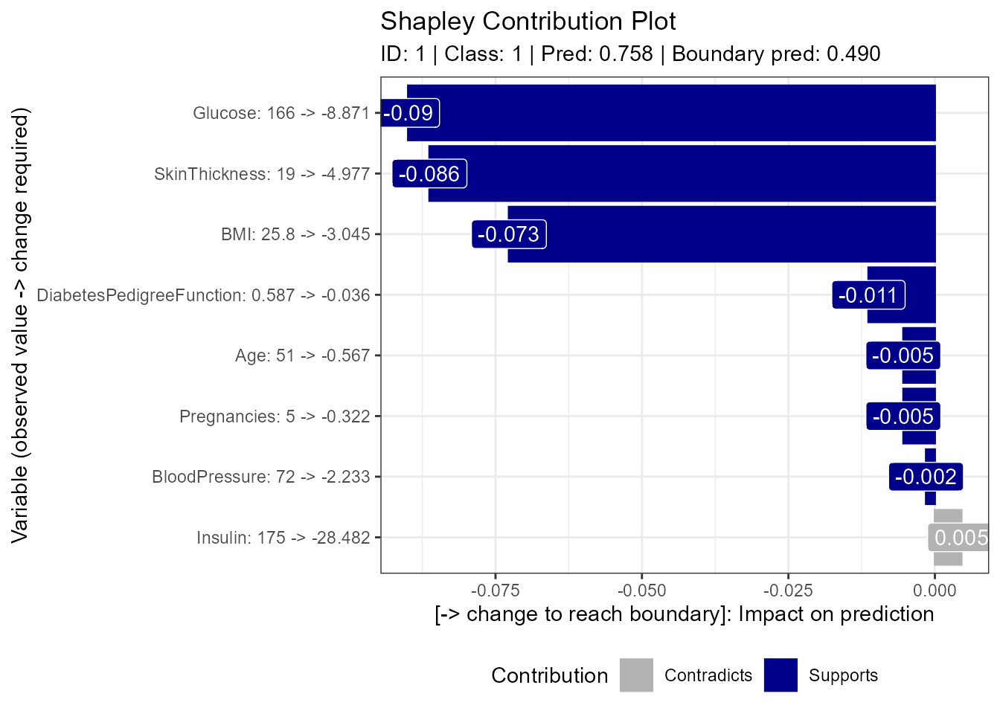
plot(bl_sparse_free)#>
#> --- Sparse CF summary ---
#> Target : 1
#> Observed pred : 0.7580 (class 1)
#> Full CF pred : 0.4900
#> Sparse CF pred : 0.4850
#> Solution valid : TRUE
#> -------------------------Step 18: External patient
Phase 3 is not limited to observations in the train/test set. Pass a
single-row data frame as the target argument to
bl_select_target() to analyse a new patient who was not
part of the original data.
The feature values below correspond to Patient 1 from the original Pima dataset (before the Insulin/SkinThickness filter was applied):
new_patient <- data.frame(
Pregnancies = 2,
Glucose = 148,
BloodPressure = 72,
SkinThickness = 35,
Insulin = 100,
BMI = 33.6,
DiabetesPedigreeFunction = 0.627,
Age = 50
)
tgt_ext <- bl_select_target(bl_results, target = new_patient)
print(tgt_ext)
#> -- bl_target --
#> Row ID : external
#> Predicted prob : 0.8200
#> Predicted class: 1
#> Feature values :
#> Pregnancies Glucose BloodPressure
#> 2.000 148.000 72.000
#> SkinThickness Insulin BMI
#> 35.000 100.000 33.600
#> DiabetesPedigreeFunction Age
#> 0.627 50.000
# Highlight on the main biplot
plot_biplotEZ(
bl_results,
points = test_pts,
target_point = unlist(tgt_ext$x_obs),
target_label = "new"
)#>
#> --- Prediction summary ---
#> Points plotted : 79
#> Predicted 1 : 26 (32.9 %)
#> Predicted 0 : 53 (67.1 %)
#> Accuracy : 61 / 79 (77.2 %)
#> TP / TN / FP / FN : 16 / 45 / 10 / 8
#> --------------------------Run the full local explanation pipeline for the external patient:
bl_local_ext <- bl_find_local_cf(bl_results, tgt_ext)
#> Pair 1/10: eigenvectors (1, 2) ...
#> Distance: 0.1066
#> Pair 2/10: eigenvectors (1, 3) ...
#> Distance: 0.1653
#> Pair 3/10: eigenvectors (2, 3) ...
#> Distance: 0.3313
#> Pair 4/10: eigenvectors (1, 4) ...
#> Distance: 0.1051
#> Pair 5/10: eigenvectors (2, 4) ...
#> Distance: 0.0966
#> Pair 6/10: eigenvectors (3, 4) ...
#> No boundary contours found.
#> Pair 7/10: eigenvectors (1, 5) ...
#> Distance: 0.1676
#> Pair 8/10: eigenvectors (2, 5) ...
#> Distance: 0.0920
#> Pair 9/10: eigenvectors (3, 5) ...
#> All segments eliminated by constraints.
#> Pair 10/10: eigenvectors (4, 5) ...
#> No boundary contours found.
#> Best pair: (2, 5) | Distance: 0.0920
print(bl_local_ext)
#> -- bl_local_result --
#> Solution found : TRUE
#> Best pair : (2, 5)
#> Distance (Z) : 0.0920
#> Boundary pred : 0.4900
#>
#> Target:
#> -- bl_target --
#> Row ID : external
#> Predicted prob : 0.8200
#> Predicted class: 1
#> Feature values :
#> Pregnancies Glucose BloodPressure
#> 2.000 148.000 72.000
#> SkinThickness Insulin BMI
#> 35.000 100.000 33.600
#> DiabetesPedigreeFunction Age
#> 0.627 50.000
#>
#> All Z-distances by pair:
#> pair distance
#> (1,2) 0.10663497
#> (1,3) 0.16527233
#> (2,3) 0.33129484
#> (1,4) 0.10507322
#> (2,4) 0.09657410
#> (3,4) NA
#> (1,5) 0.16760698
#> (2,5) 0.09198625
#> (3,5) NA
#> (4,5) NA
plot(bl_local_ext)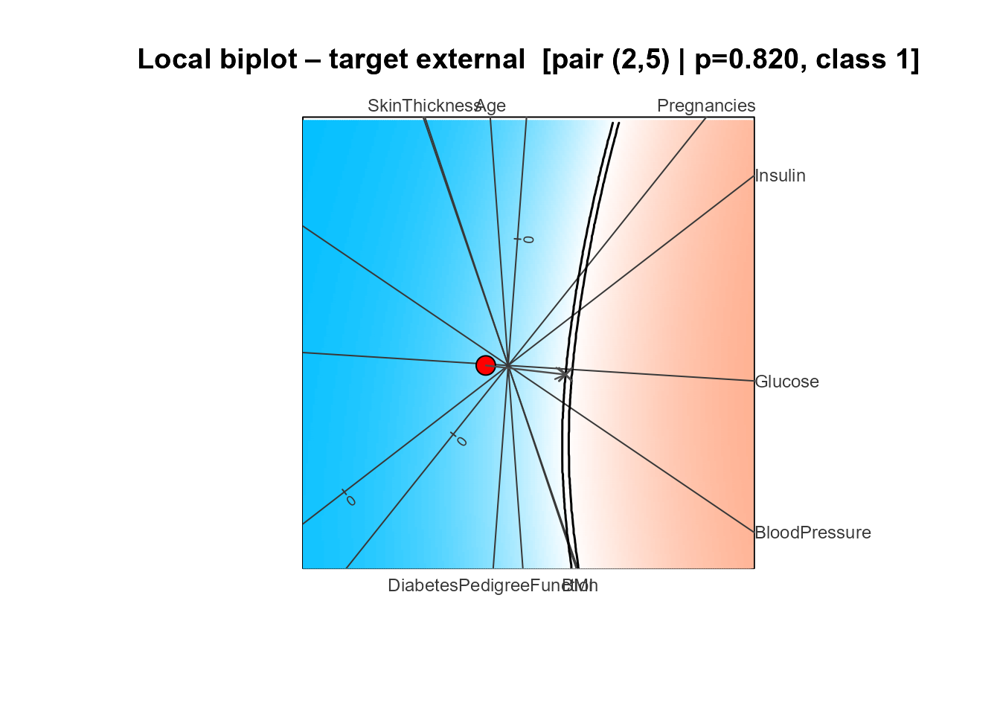
#>
#> --- Local CF summary ---
#> Target : external
#> Pred prob : 0.8200 (class 1)
#> Best pair : (2, 5)
#> Distance (Z) : 0.0920
#> Boundary pred : 0.4900
#> ------------------------
bl_shap_ext <- bl_shapley(bl_local_ext)
bl_sparse_ext <- bl_find_sparse_cf(bl_shap_ext)
plot(bl_shap_ext)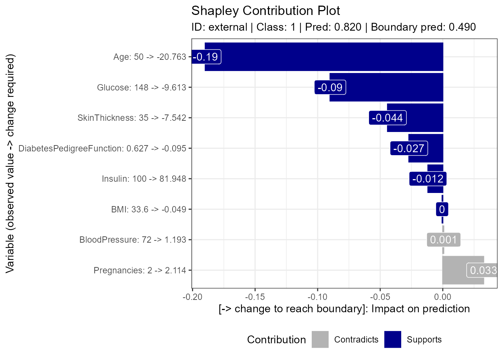
plot(bl_sparse_ext)#>
#> --- Sparse CF summary ---
#> Target : external
#> Observed pred : 0.8200 (class 1)
#> Full CF pred : 0.4900
#> Sparse CF pred : 0.4490
#> Solution valid : TRUE
#> -------------------------Summary
This vignette demonstrated the complete Boundary Logic workflow on a real clinical dataset:
| Phase | Step | Function | Purpose |
|---|---|---|---|
| 1 | 1 | bl_prepare_data() |
Load and split the Pima dataset |
| 1 | 2 | bl_filter_outliers() |
Remove the outer 10 % of training points |
| 1 | 3 | bl_wrap_model() |
Register a custom GAM with spline terms |
| 1 | 4–6 | bl_build_result() |
CVA biplot + prediction grid |
| 2 | 7 | bl_find_boundary() |
Global counterfactual search |
| 2 | 8 | plot(bl_bnd) |
Variable importance, distance to boundary |
| 2 | 9 | bl_surrogate() |
Spatial surrogate model |
| 3 | 10 |
bl_predict() + bl_select_target()
|
Select target patient |
| 3 | 12 | set_filters() |
Encode clinical actionability constraints |
| 3 | 13 | bl_find_local_cf() |
Nearest constrained counterfactual |
| 3 | 14 | plot(bl_local) |
Local biplot |
| 3 | 15 | bl_shapley() |
Shapley attribution |
| 3 | 16 | bl_find_sparse_cf() |
Sparse counterfactual |
| — | 17 | Unconstrained search | Baseline comparison |
| — | 18 | External patient | New observation not in training data |
The key finding from the Shapley analysis is which clinical variables Support moving the patient from the diabetic region toward the non-diabetic decision boundary, quantified as probability contributions. The sparse counterfactual identifies the minimum set of changes that would flip the model’s prediction, expressed in interpretable clinical units.